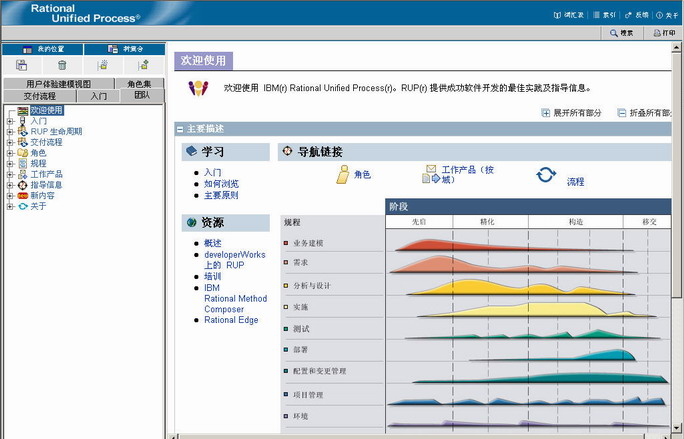

| 浏览方法 Web 站点 |
 |
|
|
方法 Web 站点包含一组 HTML 页面，您可以使用 Microsoft® Internet Explorer、Mozilla 和 Firefox 浏览器进行查看。 注意：一些作为 applet 实施的功能（如“搜索”和“我的视图”）需要 JRE 1.4.2 或更高版本（可从 http://java.sun.com/j2se 下载 JRE）。 或者，您也可以发布不带 applet 的配置，该配置不具有“搜索”和“我的视图”功能，但也不需要 JRE。如果您要查看的站点没有通过 applet 发布，则将不显示“搜索”和“我的视图”。 下图显示了用于浏览方法 Web 站点的主要元素。 选择该图的任意区域以获取如何进行浏览的简要说明。  浏览器环境的元素词汇表单击此按钮将启动一个包含词汇表的单独窗口，它以字母顺序列出了在方法 Web 站点中使用的术语以及定义和示例页面的链接。 索引单击“索引”按钮将启动一个单独窗口，其中包含方法 Web 站点中的一列按字母顺序排列的主题。 单击索引中的超链接将使相关页面在主窗口中显示。 反馈单击“反馈”按钮将启动一个单独窗口，其中包含要发送到 Rational 反馈的电子邮件消息，该邮件自动引用当前在主窗口中显示的页面。 关于单击“关于”按钮将启动一个弹出窗口，其中包含版权、当前版本号。 搜索
“搜索”允许您输入关键字并在流程中进行搜索，然后将所有与该主题相关的页面显示在“搜索结果”窗口中。“搜索实用程序”处理关键字主题，而非在流程内容页面中搜索字符串。 打印“打印”按钮将主窗口中的内容发送到您的打印机。 主要内容框架此框架显示方法内容。将内容组织在可展开和折叠的部分中。 视图视图使您可以从另一个观察角度浏览并使用方法 Web 站点。以下是视图的一些示例。
用于创建个性化视图的工具这些工具允许您便捷地创建方法 Web 站点的个性化视图。关于如何使用这些工具的信息，请参阅支持材料：我的视图部分。 |
© Copyright IBM Corp. 1987, 2005 All Rights Reserved © Copyright IBM Corp. 1987, 2006. All Rights Reserved. |